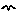

Multiple-instance submodels: population
A population submodel is one type of multiple-instance submodel. In this case, the number of instances may vary throughout the simulation run.
By making a population submodel, we are saying that the model contains a collection of objects, and individual objects can be created and destroyed during the course of a simulation run. The objects may (and usually do) differ in their attributes, but this is not such a central idea as it is for fixed-membership submodels: we can get interesting behaviour from a population model even if all the individuals have the same initial state and the same parameterisation.
When should I use a population submodel?
When I introduced the idea of fixed-membership multiple-instance submodels, I said that you can decide to have one in your model either by breaking something into smaller pieces (disaggregation), or by representing a larger unit as a multiple of a set of smaller units (scaling up).
Similar ideas apply to using a population submodel, but we use slightly different language. If you are interested in the behaviour of some large unit, such as the population dynamics of the deer on an estate, then you may consider it appropriate to model this in terms of all the individual deer on the estate. This is more a process of decomposition of the population into individuals rather than disaggregation. With the latter term, the small unit is like a miniature version of the larger one, with all the same attributes, whereas an individual deer is not a smaller version of a population. Conversely, you may have first modelled one deer, following its life history, then decided to make a model with lots of those rather than just one. This is more a process of multiplication rather than scaling up. (There is no standard terminology here. Don't worry too much about the terms used: the important point is to see that something different is going on with populations.)
How to make a population submodel
- Use the submodel tool to drag a submodel envelope on your model diagram. The submodel may be drawn in an open area of the model diagram, and not enclose anything. Or you can drag the submodel around existing elements on your model diagram, if you want those enclosed in the submodel.
- Open up the submodel properties
dialogue by selecting the
 Pointer tool, then double-clicking
anywhere in the blank area of the submodel (not on its border, and not on
any existing elements). Click on the
“Population” radio button. Do not
enter a value into the “Dimensions” box.
You can use the Creation symbol to specify the initial number of
individuals in the population.
Click on the “OK” button.
Pointer tool, then double-clicking
anywhere in the blank area of the submodel (not on its border, and not on
any existing elements). Click on the
“Population” radio button. Do not
enter a value into the “Dimensions” box.
You can use the Creation symbol to specify the initial number of
individuals in the population.
Click on the “OK” button.
- Back on the model diagram, the submodel’s appearance has now changed. Its simple border has now been replaced by a double line on the bottom and right, and a double line on the top and left.
How to make the different instances different
In general, you can use methods that are the same as or similar to those used for fixed-membership multiple-instance submodels.
Variables exported from a population submodel
With a fixed-membership multiple-instance submodel, variables are exported as arrays, since Simile knows precisely how many elements there are, and this number remains fixed for the duration of the simulation run. However, the number of instances for a population submodel can change dynamically during the course of the simulation run. Therefore, the set of values for a variable are exported as a list rather than an array. The number of elements in a list can vary, and (unlike an array) we can attach no particular significance to "the third element" of the list (since this might refer to quite different instances at different times during the course of the simulation)
Note
that although an array can be passed around from one variable to another, a
list must be processed into a scalar (single-valued) quantity as soon as it is
received. Since any quantity exported
from a population submodel must be a list, this means that the receiving
variable must derive a single value from this list: its sum, perhaps, or its
largest value, using a function
capable of having a list as one of its arguments
Special model diagram elements for population submodels
Four of the model diagram elements are only used in population submodels. They are:
 initialisation,
for specifying the initial number of instances;
initialisation,
for specifying the initial number of instances;
migration, for specifying an absolute rate of creating new instances; reproduction,
for specifying the rate per individual for creating new instances; and
reproduction,
for specifying the rate per individual for creating new instances; and extermination,
for specifying the conditions under which an instance is removed.
extermination,
for specifying the conditions under which an instance is removed.
See the appropriate entries for further information on how to use these elements.
In: Contents >> Working with submodels